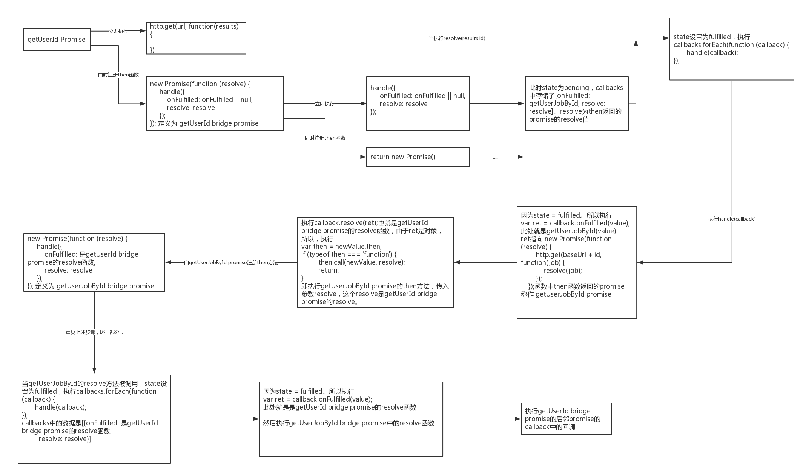

执行demo:
function Promise(fn) {
var callbacks = [];
var status = 'pending';
var value = null;
this.then = onFulfilled => {
return new Promise(function (resolve) {
handle({
onFulfilled: onFulfilled || null, // resolve后需要执行的回调函数
resolve: resolve // 当前Promise(bridge) 的resolve
});
})
}
function handle(callback) {
if (status === 'pending') {
callbacks.push(callback); // callbacks是调用then的promise作用域里的,存储then中回调函数,不会是then返回的新promise
// console.log(callback.onFulfilled.toString());
return;
}
if (!callback.onFulfilled) {
callback.resolve(value);
return;
}
var res = callback.onFulfilled(value);
callback.resolve(res); // resolve为Promise(bridge)
}
function resolve(res) {
if (res && (typeof res === 'object' || typeof res === 'function')) {
var then = res.then;
if (typeof then === 'function') {
then.call(res, resolve); // 注册回调函数中返回的promise（后邻）,resolve为Promise(bridge)
return;
}
}
status = 'fulfilled';
value = res;
setTimeout(() => {
callbacks.forEach(cb => {
handle(cb);
});
})
}
fn(resolve);
}
function getUserId() {
return new Promise(function (resolve) {
setTimeout(() => {
resolve('111111');
})
})
}
function getUserJobById(id) {
return new Promise(function (resolve) {
http.get(baseUrl + id, function (job) {
resolve(job);
});
});
}
getUserId()
.then(getUserJobById)
.then(function (job) {
console.log(job);
})
执行原理:
